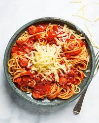

Spaghetti

Spaghetti and meat sauce
For a perfect quick and easy family dinner there is this amazing family
recipe of spaghetti with meat sauce. It is so good youll want to make extra to have left over the next day!
Ingredients
- spaghetti noodles
- Ground beef or turkey
- tomateos and tomato paste
- onion,garlic,and spices of choice
Steps
- Quick Meat Sauce Brown your meat in a bit of oil, and then stir in onions until they soften. Then add lots of flavor with garlic, tomato paste, oregano, and red pepper flakes. To finish the sauce, add a bit of water (or broth) and crushed tomatoes. You only need to simmer the sauce for about 25 minutes, so about 15 minutes before it is ready, you can cook your spaghetti.
- Cook your noodle in salted waterhis is my number 1 tip for the best spaghetti (or pasta for that matter). Pasta water should taste salty. Add one tablespoon of salt for every four quarts (16 cups) of water, which is perfect for cooking one pound of pasta.
- Cook to al dente If you still have it, check your package instructions. If youve tossed the package already, spaghetti takes 8 to 12 minutes. We recommend setting a timer for 8 minutes and then checking your spaghetti to see if it needs longer. Al dente means that your pasta has some texture left and isnt mushy.
- Dont rinse the spaghettiTheres no need to rinse spaghetti after cooking, especially if you plan to toss it with a sauce. Rinsing removes the starch, which helps the sauce cling to the noodles. My only caveat to this is when Im making cold pasta dishes, like pasta salad or macaroni salad.
Home